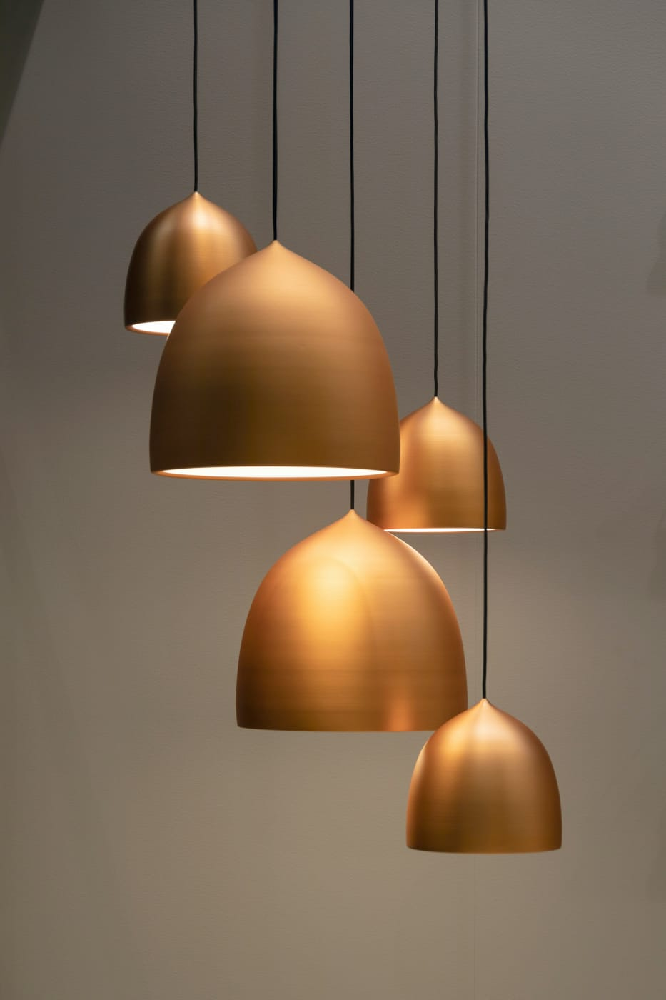
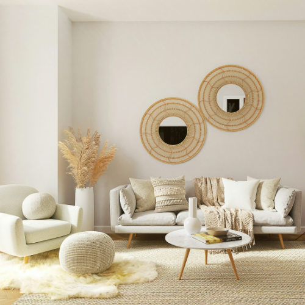
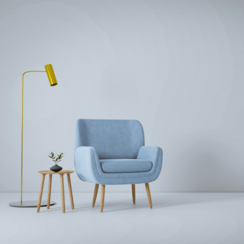

About Us
Furnimart is a furniture store that started operating in 2010 and is based in Sandton, South Africa. The store sells top-quality and affordable furniture for homes and offices. We sell products like couches, beds, chairs, mirrors, dining tables, TV stands, TV’s, wardrobes, lamps, office desks and chairs. Furnimart is SA’s no.1 recommended furniture store when it comes to the best and top-notch furniture.
Our Mission
Our mission is to create a dream home for our customers because we understand that home is a place where you feel safe and can be your true self. We strive to supply our customers with top quality and affordable furniture.
Our Vision
We aim to create a safe haven for our customers for them to step into a new and extraordinary world.